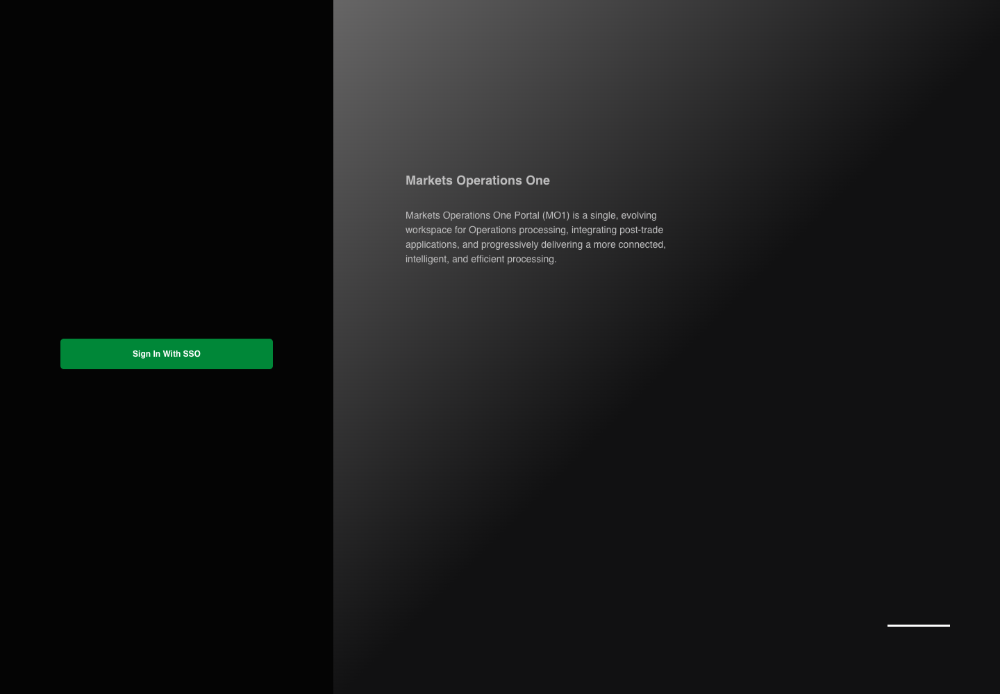

AUTH-009 actual React canonical steps
PASS · application/run-050/auth-009-actual-react-canonical-steps-16efdc165d41-attempt-1 · ACTUAL_APPLICATION_LOCAL_SERVICES
Actual MFE React; controlled login API responses; hostname proxy preserves source environment decisions. No real identity or deployment acceptance.
2026-10-22T06:09:09.267Z to 2026-10-22T06:09:12.642Z
Assertions and result · Artifact manifest · Exact run inputs and source hashes
Result SHA-256:5fd8b73f29840f946d860672a95eb581f37d6138a443e5216418e0bae7802184Machine observations
- environment-fixture.json
bc3cf25549017e43df7b66bad2a3c895ff609371305bba6100c1fcbee9cad44b - initial-context.json
2f55bdc615833fc87b627a6d1adde2ee0e96e5353ea381abeb83f5ad7e912665
Screenshot capture: CAPTURED. Named frames: 8.
Step screenshot evidence: COMPLETE. 7/7 canonical steps have execution screenshots.
Canonical step timeline
Given User A is an entitled fixture user in an isolated browser context with empty browser storage
Execution: PASSED.
1. step-01 Visible state after step 1: Given User A is an entitled fixture user in an isolated browser context with empty browser storage
2026-10-22T06:09:09.498Z · 1440×1000
Step: /Users/lushevol/code/github/ratan-release-impact/workbench/tasks/ui-test-coverage-20261022/test-cases.md:500
SHA-256:cb9c3b8047859412e8abcaed51ad9ecefb4bd820c8849af4992e593d500d1836And the browser uses the PROD environment fixture with query parameter show_normal_login="N"
Execution: PASSED.
2. step-02 Visible state after step 2: And the browser uses the PROD environment fixture with query parameter show_normal_login="N"
2026-10-22T06:09:09.548Z · 1440×1000
Step: /Users/lushevol/code/github/ratan-release-impact/workbench/tasks/ui-test-coverage-20261022/test-cases.md:501
SHA-256:cb9c3b8047859412e8abcaed51ad9ecefb4bd820c8849af4992e593d500d1836When the browser navigates to the configured portal entry URL
Execution: PASSED.
3. step-03 Visible state after step 3: When the browser navigates to the configured portal entry URL
2026-10-22T06:09:10.418Z · 1440×1000
Step: /Users/lushevol/code/github/ratan-release-impact/workbench/tasks/ui-test-coverage-20261022/test-cases.md:502
SHA-256:c0625af2673f18617cc3b2a7897f1795af27e98ea12aa6d2193b5293c6409a6dThen the textbox with placeholder "Enter Username" on the login page is absent
Execution: PASSED.
4. step-04 Visible state after step 4: Then the textbox with placeholder "Enter Username" on the login page is absent
2026-10-22T06:09:10.636Z · 1440×1000
Step: /Users/lushevol/code/github/ratan-release-impact/workbench/tasks/ui-test-coverage-20261022/test-cases.md:503
SHA-256:fed95168616f429ab9c3d4f7a296cb9e6d64d70a3042eafdc7dcf7e1d2207a71And the text input with placeholder "Enter Password" on the login page is absent
Execution: PASSED.
5. step-05 Visible state after step 5: And the text input with placeholder "Enter Password" on the login page is absent
2026-10-22T06:09:10.817Z · 1440×1000
Step: /Users/lushevol/code/github/ratan-release-impact/workbench/tasks/ui-test-coverage-20261022/test-cases.md:504
SHA-256:fed95168616f429ab9c3d4f7a296cb9e6d64d70a3042eafdc7dcf7e1d2207a71And the button labelled "Sign In" on the login page is absent
Execution: PASSED.
6. step-06 Visible state after step 6: And the button labelled "Sign In" on the login page is absent
2026-10-22T06:09:11.051Z · 1440×1000
Step: /Users/lushevol/code/github/ratan-release-impact/workbench/tasks/ui-test-coverage-20261022/test-cases.md:505
SHA-256:fed95168616f429ab9c3d4f7a296cb9e6d64d70a3042eafdc7dcf7e1d2207a71And the link labelled "Sign In With SSO" on the login page is visible
Execution: PASSED.
7. step-07 Visible state after step 7: And the link labelled "Sign In With SSO" on the login page is visible
2026-10-22T06:09:11.321Z · 1440×1000
Step: /Users/lushevol/code/github/ratan-release-impact/workbench/tasks/ui-test-coverage-20261022/test-cases.md:506
SHA-256:fed95168616f429ab9c3d4f7a296cb9e6d64d70a3042eafdc7dcf7e1d2207a71
Additional named frames

The final visible state after the named test assertions.
2026-10-22T06:09:11.949Z · 1440×1000Step: Test source: /Users/lushevol/code/github/ratan-release-impact/workbench/e2e/audit-specs/login-environment.spec.ts:9
SHA-256:
fed95168616f429ab9c3d4f7a296cb9e6d64d70a3042eafdc7dcf7e1d2207a71Screenshots establish visible state only. Assertions and traces support functional claims.